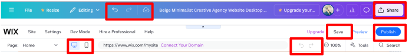
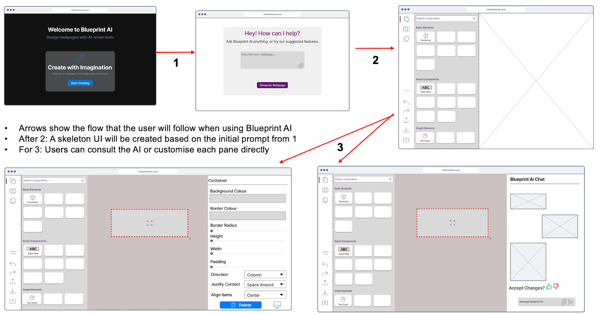
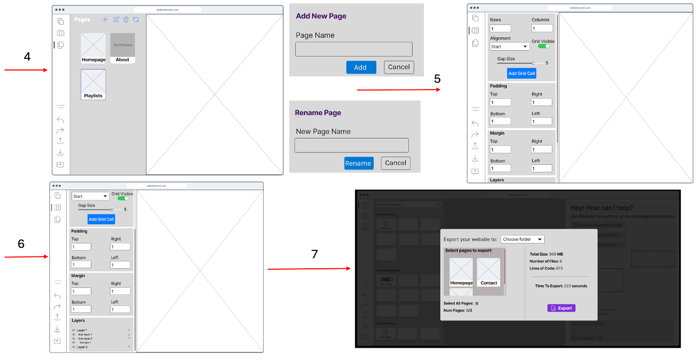
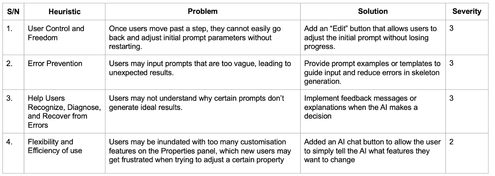
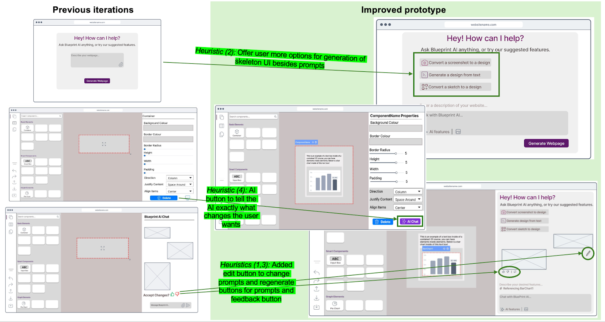

UI Design Overview
Given that our project is targeted to a wide range of users, from programmers to designers – all with different levels of experience; we had to design a UI that would cater to these different groups. A careful balance was considered to create a UI that allowed for experienced designers to have ample avenues to compose and customise but not inundate regular users with too many features. Similarly, the UI needed to be intuitive but at the same time, not compromise on the application’s capabilities.
We referenced highly popular design products such as Wix and Canva, using Jakob Nielson’s 10 Usability Heuristics for UI Design to guide our design process [1].
Design Principles
1. Customisation Sidebar
Canva’s editing studio affords an elegant UI design that fulfills many of Nielson’s Usability Heuristics. In particular, the side tab which contains all the editing features—from adding elements to text—is clearly and concisely nested on the left. This creates a functional, non-cluttered layout. Additionally, the structure that side tabs afford allows for Information Architecture (IA) to be practised. IA is an essential design principle that breaks down complicated and complex interfaces into logical, useful components that users can use to accomplish their tasks [2]. Furthermore, we took heavy cues from a well-researched Medium article detailing the essential features a side tab must have, especially from its width and size – for space optimisation – and a quick search feature for maximum efficiency and convenience [3].

Usability Heuristics
| Design Feature | Usability Heuristic | Implementation into Blueprint AI |
|---|---|---|
| Customisation sidebar | Recognition rather than recall | All fields and labels are visible and labelled on the left of the UI (adding elements, textboxes, etc). Makes it easy for the user to access. |
| Flexibility and efficiency of use | Users have many customisation and personalisation options as company logos, drawings can be uploaded and stored in the sidebar for use. | |
| Aesthetic and minimalist design | Each section in the sidebar displays only relevant information, the sidebar is also portioned distinctly, ensuring key features are presented. |
2. Top Bar
We also took direction from the top bars of Wix and Canva. These bars contained crucial project-level information and essential functions needed for the user to save, publish, undo their work. The buttons were clearly labelled or had icons that were established and commonly recognised for users – which is highly effective in conveying important information to the user without taking up much space [4]. Additionally, on the top bar of the Wix page, the buttons to toggle between computer view and mobile phone view were ingeniously formatted – with this being a key feature of our project, we followed Wix’s stylish incorporation. This design was also incorporated into our sketches and eventually the final UI design of our project.
Usability Heuristics
| Design Feature | Usability Heuristic | Implementation into Blueprint AI |
|---|---|---|
| Top Bar | Visibility of system status | Flags were added to let the user know if they are in editing mode and if their work was saved up to date. |
| Match between the system and the real world | Labels added and icons used are well-known, such as the undo-redo buttons, download button, etc. | |
| User controlled freedom | Clearly marked undo-redo buttons and exit buttons were included. | |
| Consistency and standards | Project layout is modelled after commonly used, industry-leading UIs such as Wix and Canva. |
3. AI Chatbot/AI Features
We improved and innovated on the AI features in Wix and Canva. Since one of the main selling points of Blueprint AI is the use and integration of AI into the UI development and design process, we expanded upon the AI functionality in the UI and revamped its visibility, usability and accessibility.
For Wix and Canva, AI was not a prominent feature and is relegated into the corner of the left sidebar, shifting the focus onto the user’s own input and customisation. Furthermore, the use of AI is severely limited and restricted. As we envisioned AI to be woven seamlessly and tailored into all aspects of UI creation, we deployed an AI chat bot system which is featured prominently in the UI whilst maintaining the main customisation features a user can apply. We ensured that the chat box design also adhered to key UI principles by relying on visual cues such as a ‘Blueprint AI is typing…’ indicator to alert the user that their prompt is being handled [5]. These subtle cues guide the user through using the chatbot effectively.
Usability Heuristics
| Design Feature | Usability Heuristic | Implementation into Blueprint AI |
|---|---|---|
| AI chatbot / AI features | Error prevention | Chatbot design allows recording of prompts and logs changes and conversations, allowing for previous builds to be re-generated prior to an error. |
| Help users recognise, diagnose, and recover from errors | AI suggestions highlight overflows and obscured elements clearly. | |
| Help and documentation | Chatbot allows for easy search and retrieval of project features through querying the AI. |
Sketches
Sketches were generated at the early conception stages of the project. These sketches were a quick way to actualise our ideas into concrete concepts without getting too carried away on the implementations of these ideas [6]. Revisions and edits could be done easily, which allowed us to gather user feedback faster and update our designs more efficiently.
DESIGN A
AI prompter at the side of the application, with portrait chat log. Direction: Chat bot-oriented design, similar to ChatGPT, with Blueprint AI responding on text alongside updating UI.
DESIGN B
AI prompter located at the bottom of application; chat log can be viewed on clicking the 'history' button. Direction: One way communication, where prompts are processed and made directly into changes on the UI.
We gathered feedback for our designs which allowed us to refine our sketches. Google Form surveys of 25 participants were used to get a quick, quantitative understanding of our sketches, while semi-structured interviews from a sample of surveyed participants were used to get deeper qualitative feedback.
Design A was preferred as shown in Figure 1. Some users who preferred Design A wanted a clear response from the AI—similar to current AI chatbot designs such as ChatGPT and Copilot. This back and forth texting style interface would be more intuitive and recognisable.
Figure 1. Pie chart showing design preference
Figure 2. Pie chart showing views on left side bar
Some users indicated the need for a confirmation button to preview changes proposed by the AI, instead of the AI making its own changes directly. Most users indicated that they would prefer having all the various buttons (download button, pages, widgets, etc) to be on one side of the page, to make the page less cluttered and cleaner. Most users agreed with the design of the customisation side panel (Figure 2), with some stating it was a much needed feature as it provided all the tools necessary for design. Those surveyed who disagreed with the design stated that a more concise, segmented design was needed.
We took into consideration all the feedback and updated our sketches to reflect this feedback in our improved sketches below.
IMPROVED SKETCH
Wireframe Prototype
Wireframes are an essential part of design, they allow for a greater sense of structure and cohesiveness of the design [7]. The following prototype was designed based on the improved sketch. This prototype allowed us to visualise our designs clearer and develop the design in a more concrete and realistic manner. With these wireframe prototypes, we were able to establish the flow for users of Blueprint AI.
 Evaluation of Sketches
As no design is perfect, we evaluated the prototype to uphold the design thinking process. A heuristic evaluation consisting of parts of Nielsen’s 10 usability principles was utilised to evaluate our initial wireframe prototype. This allowed us to maintain user-centric thinking in the design process, such that Blueprint AI is kept on par with industry standards. We employed the use of a Severity Rating system taken from Nielson, to help us diagnose and prioritize which areas we needed to fix [8].
Severity Ratings:
0 = I don't agree that this is a usability problem at all || 1 = Cosmetic problem: need not be fixed unless extra time is available || 2 = Minor usability problem: fixing this should be given low priority || 3 = Major usability problem: important to fix, so should be given high priority || 4 = Usability catastrophe: imperative to fix before product can be releasedBased on the evaluation, we improved on the wireframe prototype. This refined version proved to be substantial and finally suitable enough to begin developing Blueprint AI.
Interactive Wireframe
During the development process, user feedback was continuously sought. This enabled us to stay focused on the user, not only saving time but also improving the quality of the product [9]. The continuous input from fellow students, full-time software developers and project managers allowed us to shape Blueprint AI into a highly functional product that users can learn quickly, use effectively and deploy their frontend code effortlessly.
The final UI of Blueprint AI below is the result of these countless revisions.
References
[1] J. Nielsen, “10 Heuristics for User Interface Design,” Nielsen Norman Group, Apr. 24, 1994.
https://www.nngroup.com/articles/ten-usability-heuristics/
[2] “What Is Information Architecture & Why Does It Matter?,” blog.hubspot.com, Sep. 13, 2022.
https://blog.hubspot.com/website/information-architecture#what-information-architecture
[3] Dmitry Sergushkin, “Best UX Practices for Designing a Sidebar - UX Planet,” Medium, Dec. 23, 2024.
https://uxplanet.org/best-ux-practices-for-designing-a-sidebar-9174ee0ecaa2
(accessed Mar. 13, 2025).
[4] Rajat Bagree, “Why is icon design important in UI design? - Procreator Blog,” ProCreator Blog: Design, Technology, Innovation, Feb. 04, 2024.
https://procreator.design/blog/why-is-icon-design-important/
(accessed Mar. 13, 2025).
[5] “The Art of Conversational AI Chatbot Design: Key Principles and Techniques – Esse AI Blog,” Esse-ai.com, Jun. 05, 2023.
https://esse-ai.com/blog/?p=430
(accessed Mar. 13, 2025).
[6] Tamanna Tahera, “The Importance Of Sketching,” www.toscaleblog.co.uk.
https://www.toscaleblog.co.uk/blog/the-importance-of-sketching
[7] N. Haas, “What Is a Wireframe? 7 Reasons Why Wireframing Is Important In Web Design,” Orbit Media Studios, Mar. 16, 2011.
https://www.orbitmedia.com/blog/7-reasons-to-wireframe/
[8] J. Nielsen, “Severity Ratings for Usability Problems,” Nielsen Norman Group, Nov. 01, 1994.
https://www.nngroup.com/articles/how-to-rate-the-severity-of-usability-problems/
[9] Marek Strba, “User Feedback,” Guides - Learn user testing & UX research | UXtweak, Aug 2024.
https://www.uxtweak.com/user-feedback/